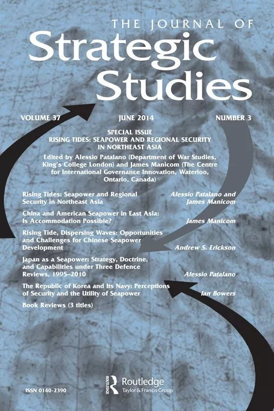

收录于合集
作品简介
【作者】 Tamir Libel博士主要研究兴趣是阿拉伯-以色列冲突、国际安全、欧洲安全、以色列国内政治关系和情报研究等。
【编译】 陈舜波（国政学人编译员，悉尼大学人文与社会科学学院国际关系学系）
【校对】 曹鹏鹏
【审核】 李代霓
【排版】 马璐
【来源】 Libel, Tamir. “Rethinking Strategic Culture: A Computational (social Science) Discursive-Institutionalist Approach.” Journal of Strategic Studies (November 20, 2018): 1–24.(Chicago)
期刊介绍

《战略研究杂志》是一份涵盖军事和外交战略研究的同行评议学术期刊。它成立于1978年，由约翰·古奇(利兹大学)担任创始主编。现任主编是乔·马诺洛(伦敦国王学院)和托马斯·G·马肯(约翰·霍普金斯大学)。主要研究领域涵盖人类如何面对实现政治目标的挑战、当代安全和持久争议、将历史和理论方法结合研究现代战争、以及国防政策和现代战略研究。2018年期刊影响因子达1.482。
重新思考战略文化：计算机（社会科学）的话语制度主义方法
Rethinking strategic culture: A computational (social science) discursive- institutionalist approach
Tamir Libel
内容提要
尽管案例研究激增，但战略文化研究方法长期陷入理论僵局。在约翰逊——格雷辩论时期战略文化的研究最终走向分裂。本文概述了一种旨在克服这一僵局的新方法，主要由三个论点组成。首先，本文认为前三代战略文化研究未能解释战略文化如何影响行为。其次，将战略文化理论建设与话语制度主义保持一致为克服这一基本谬误提供了一种途径。第三，战略文化的研究计划应利用计算社会科学，使它能够提出并测试中层理论。
文章导读
一、介绍
战略文化研究陷入了长期的困境。人们对于战略文化应该解释什么，如何解释，以及在多大程度上解释存在大量困惑。作者认为将战略文化概念化为一种新的制度主义概念能克服现有的理论僵局。首先，它可以解释变化，反映制度是如何影响个人行为的；其次，战略文化转化为话语制度主义的新兴学派来克服上述困境。此外，话语制度主义战略文化理论与计算社会科学方法是一致的。这种整合可以帮助克服目前在战略文化文献中发现的其他两个主要缺陷:(a)因为绝大多数研究都是使用定性研究，因此研究的规模有限;(b)缺乏可测试的中层战略文化模型
本文分三部分进行分析。第一部分首先论证了战略文化的最初概念，虽然具有文化维度，但主要关注的是政治精英对安全事务决策的影响。接下来，它提供了一个对前三代战略文化文献的综述，集中在约翰斯顿—格雷辩论。该辩论未克服这一概念的两个相互关联的谬误:将战略文化概念化为同质且在时间上连续的。第二部分以回顾新制度主义学作为开篇，重点介绍了历史制度主义和社会学制度主义。其次，战略文化无法有效地解释变化，这反映了新制度主义的核心问题——解释制度如何影响行动。第三部分了提供了对第四代战略文化文献的综述及其两个基本特征——认识论和本体论。
二、前三代战略文化
1977年，杰克·斯奈德（Jack Snyder）将战略文化定义为“一个国家战略共同体的成员通过指导或模仿获得并相互分享的思想、条件性情绪反应和习惯性行为模式的总和”，是战略文化概念的起源。
第一代倾向于不反映实证主义。在这一时期，战略文化主要由三个不足之处：首先，学者们对什么是战略文化以及战略文化应该是什么仍然模棱两可。第二，战略文化通常与特定的行为联系在一起，并被视为同质结构。第三，假设时间上的连续性，战略文化变革的前景和机制尚未确定。。第二代研究学者将其与建构主义结合。战略文化不再被视为一个解释性的概念因素，成为“在战略决策领域中政治霸权的工具”，使文化和行为之间的联系更加模糊。第三代学者才将重点放在更广泛的领域，导致战略文化研究产生分裂。其中，“约翰斯顿——格雷辩论”就发生在这一时期。尽管约翰斯顿和格雷对战略文化和战略行为两个变量之间的区别和联系展开了激烈的辩论，但是他们都无法解释这一概念的核心谬误——解释变化（accounting for change）。
三、新制度主义
历史制度主义出现于20世纪60年代和70年代，是对“政治和结构功能主义的群体理论”的回应。历史制度主义学者提出认为国家是一系列能够构建社会和政治冲突的特征和结果的体系。公共政策的跨国分析被用来展示制度之间的相互作用如何产生不同的国家轨迹。历史制度主义研究主要有五个共同特征。首先，制度与行为之间的关系被广义概念化概。第二，强调制度运行中的权力不对称。第三，在制度发展方面，强调了路径依赖和非预期后果（unintentional ramifications）。第四，偏好将体制分析纳入其他类型的因素。第五，比较性强。
社会学制度主义的发展是对20世纪70年代出现的“政治行动者是利益驱动的”这一共同假设的回应。它的论点是人类通常遵循“适当性逻辑”，而不是遵循自身利益最大化的规则。首先，制度是广泛的，以不局限于“传统”元素的方式定义（如正式规则、程序和规范等）。第二，制度与行动者之间存在着互动和相互构成的关系。第三，组织过程是一种语境化的文化实践，其目的是增强合法性而非效率，并由理性计算驱动。此外，研究往往采用比较的方法，并着重于体制的稳定性。然而，社会学制度主义学者在何种机制(重新)产生稳定性以及何种结构能够发挥其因果影响方面存在分歧，这导致他们在试图解释制度变迁案例时往往被迫假设“外生冲击”。
四、第四代战略文化
战略文化与上述新制度主义学派同样都依赖于外部冲击。因此第四代战略文化学者参考新制度主义，融合了话语制度主义，试图用观念和话语来解释变化(和连续性)。在此阶段，话语被作为一种互动的过程，赋予了行动者改造制度的能力。变化往往是在关键时刻这种互动过程的结果。因此，制度变迁是动态的，可以通过行动者的思想和话语来解释。战略文化定义为由亚文化组成，每个亚文化都有自己独特的身份，由社会地位提供的精英群体的世界观构成，拥有干预公共领域所需的合法性。第四代学者的主要特征是，本体论上，这些学者关注的是战略文化的变化而非稳定，强调精英在安全政策制定中的作用。战略亚文化之间的竞争被视为战略文化变革的潜在来源。因此，第四代学者倾向于采用以精英为中心的方法。
该图是第四代战略文化框架。该框架基于约翰斯顿的假设做出了一个基本假设，即当一个政体中存在多种亚文化时，其中一种将占据主导地位，并致力于维持现状。由于当前的框架假设在每个亚文化的核心都有一个认知共同体，一个亚文化的优势是基于其认知共同体在战略精英中的世界观制度化。然而，对外交政策的不同理解继续存在于政治话语的边缘，代表着另类的、边缘化的知识群体。亚文化之间对主导地位的竞争的运作化，如认知共同体之间对观念霸权的竞争，克服了“过度同质性”和“过度连续性”的双重谬误，因为变化是一个明确定义的社会机制的结果。
这种建立理论的努力需要一种可以跟踪思想影响政策的论述过程的方法支持。本文提出了社科研究的新方法——计算机社会科学。计算社会科学方法能有效解决在早期无法使用经验或统计方法进行研究的问题。 此外，它们还适合与话语制度主义相结合。事实上，话语制度主义的话语过程可以被模拟为计算信息处理的社会过程。尽管有其优势，但它违背了主要是定性的、反实证的和解释性的战略文化学术界的文化基础，难以被学界采纳。计算机社会科学要求投入大量工作到调整或建立数据收集、存储和处理的专用基础设施上以及访问高性能计算(HPC)设施。同时，研究人员需要掌握必要的编程技能。
五、总 结
总之，随着第四代文献的出现，战略文化研究正处于一个十字路口。一方面，它的学术团体可以利用由话语制度主义和计算社会科学提供的方法论突破理论困境。该方法处于社会科学研究的前沿，不仅促进其自身的发展，而且有助于促进整个社会科学研究。另一方面，考虑到大多数战略文化学者的反实证主义和定性立场，学界极有可能无法应对挑战，使萌芽中的第四代战略文重蹈前辈研究的覆辙。
_ ** _ ** _ ** _ 本文由国政学人独家编译推荐**__
扫下方二维码查看往期精彩
【新刊速递】第01期 | Review of International Studies Vol.45, No.4, 2019
【新刊速递】第02期 | International Relations Vol.33, No.3, 2019
【新刊速递】第03期 | International Organization Vol.73, No.3, 2019
【新刊速递】第04期 | World Politics, Vol.71, No.4, 2019
【新刊速递】第05期 | European Journal of International Relations
分类导览 1
分类导览 2
点“在看”给我一朵小黄花